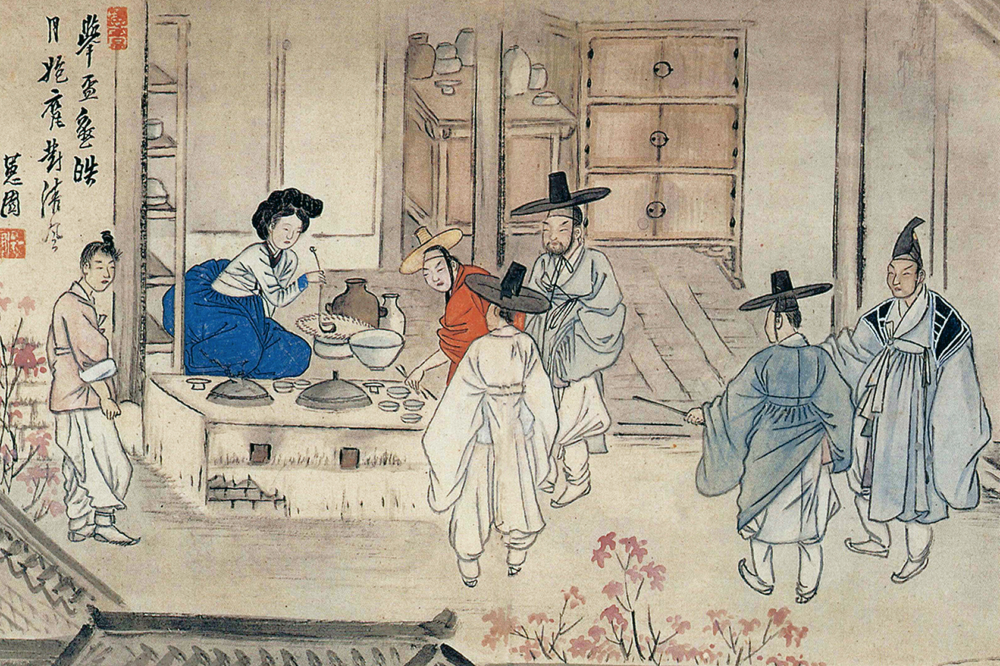
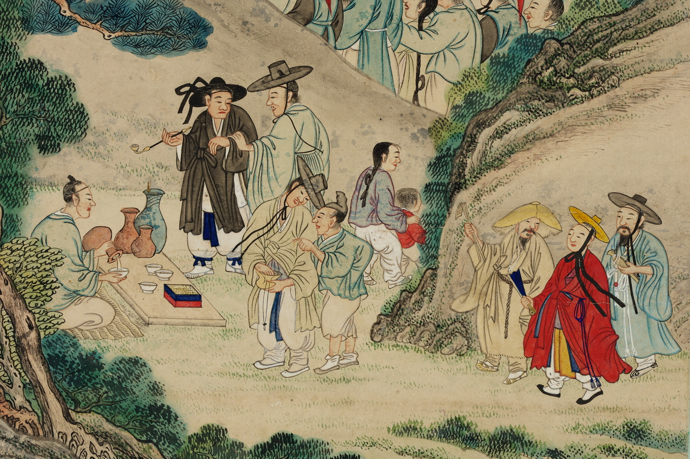

What is Makgeolli?

© Kansong Art Museum (간송미술관)
Health Benefits of Makgeolli
More Than a Drink
Makgeolli is a traditional Korean rice wine made from fermented rice, water, and a
fermentation starter called nuruk.
It has a milky appearance and is known for its mild sweetness, light acidity, and smooth texture.
Makgeolli usually has a relatively low alcohol content compared to many other alcoholic drinks, which makes it easy to enjoy.
Traditionally, makgeolli is served in a bowl rather than a glass and is often shared with family and friends.
Today, makgeolli is gaining popularity around the world for its unique flavor and its naturally occurring probiotics from the fermentation process.
It has a milky appearance and is known for its mild sweetness, light acidity, and smooth texture.
Makgeolli usually has a relatively low alcohol content compared to many other alcoholic drinks, which makes it easy to enjoy.
Traditionally, makgeolli is served in a bowl rather than a glass and is often shared with family and friends.
Today, makgeolli is gaining popularity around the world for its unique flavor and its naturally occurring probiotics from the fermentation process.
How It Began
The Story
A Brief History of Makgeolli
Makgeolli has a long history in Korea and dates back many centuries.Records suggest that
similar rice wines were brewed during the Three Kingdoms period (57 BCE – 668 CE).
For a long time, makgeolli was commonly enjoyed by farmers and rural communities, especially after a day of work in the fields.
Because it was often shared from large bowls, the drink became closely associated with hospitality, community, and togetherness.
Over time, makgeolli evolved from a simple countryside drink into one of Korea’s most well-known traditional beverages.
For a long time, makgeolli was commonly enjoyed by farmers and rural communities, especially after a day of work in the fields.
Because it was often shared from large bowls, the drink became closely associated with hospitality, community, and togetherness.
Over time, makgeolli evolved from a simple countryside drink into one of Korea’s most well-known traditional beverages.

© National Museum of Korea (국립중앙박물관)
What is Makgeolli?
-
It depends on your body constitution and drinking capacity, so please enjoy with caution.
-
Yes, but if you have any allergic reactions, you should stop consuming it immediately.
-
It is printed on the cap of the Makgeolli bottle.
-
The difference lies in the presence of live yeast and the length of the shelf life.
-
Because Makgeolli produces natural gas during fermentation, the caps are often looser than regular PET bottles. For this reason, Makgeolli should always be stored upright, not upside down.
-
The flavor of makgeolli can vary depending on the rice type, fermentation time, and brewing method. Each batch can have unique notes of sweetness, tanginess, or nuttiness.